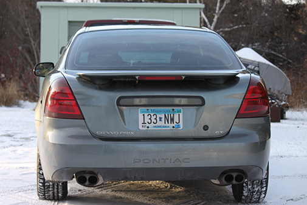

About Silver Design and Tinting

Silver Design and Tinting is a brand new company trying to bring cheap and reliable film/vinyl to northern Minnesota. If you are trying to do this yourself, you can watch these videos.
- How to Tint a Door Window
- Window Tinting: Side Window Installation (Two Stage Method
- How To Remove Window Tint
| Date | Event | My age |
|---|---|---|
| May 1, 1954 | The city if Silver Bay was founded after previously being known as the Beaver Bay housing project. | |
| 1972 | Silver Bay attained widespread publicity in the 1960s when it was discovered that the Reserve Corporation was dumping taconite tailings into Lake Superior. In 1972 they were forced to stop and charged with violating the Rivers and Harbors Act of 1899, which prohibited the dumping of harmful materials into interstate waters. In 1977, after a long trial, a new waste-storage facility was built 7 miles inland. | |
| 1986 | Reserve Mining declared bankruptcy and shut down the plant. | |
| 2002 | Moved to Silver Bay. | 3 Years old |
- Cheap
- Reliable
- Only in northern Minnesota